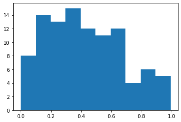
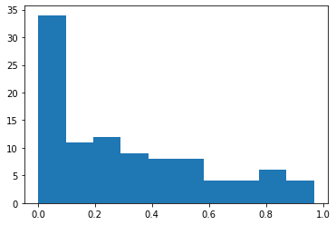
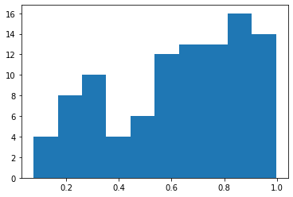
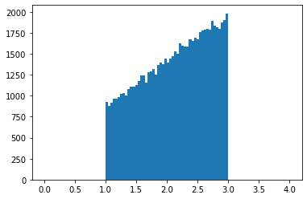
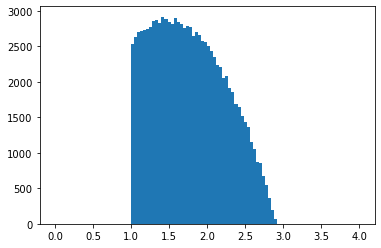
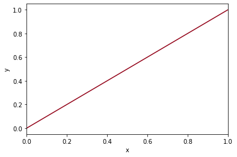
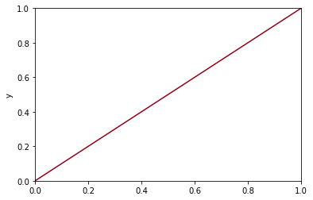

머신러닝 프로그래밍 5주차-Random number
#random number
import random
import math
help(random)
Help on module random:
NAME
random - Random variable generators.
DESCRIPTION
integers
--------
uniform within range
sequences
---------
pick random element
pick random sample
pick weighted random sample
generate random permutation
distributions on the real line:
------------------------------
uniform
triangular
normal (Gaussian)
lognormal
negative exponential
gamma
beta
pareto
Weibull
distributions on the circle (angles 0 to 2pi)
---------------------------------------------
circular uniform
von Mises
General notes on the underlying Mersenne Twister core generator:
* The period is 2**19937-1.
* It is one of the most extensively tested generators in existence.
* The random() method is implemented in C, executes in a single Python step,
and is, therefore, threadsafe.
CLASSES
_random.Random(builtins.object)
Random
SystemRandom
class Random(_random.Random)
| Random number generator base class used by bound module functions.
|
| Used to instantiate instances of Random to get generators that don't
| share state.
|
| Class Random can also be subclassed if you want to use a different basic
| generator of your own devising: in that case, override the following
| methods: random(), seed(), getstate(), and setstate().
| Optionally, implement a getrandbits() method so that randrange()
| can cover arbitrarily large ranges.
|
| Method resolution order:
| Random
| _random.Random
| builtins.object
|
| Methods defined here:
|
| __getstate__(self)
| # Issue 17489: Since __reduce__ was defined to fix #759889 this is no
| # longer called; we leave it here because it has been here since random was
| # rewritten back in 2001 and why risk breaking something.
|
| __init__(self, x=None)
| Initialize an instance.
|
| Optional argument x controls seeding, as for Random.seed().
|
| __reduce__(self)
| helper for pickle
|
| __setstate__(self, state)
|
| betavariate(self, alpha, beta)
| Beta distribution.
|
| Conditions on the parameters are alpha > 0 and beta > 0.
| Returned values range between 0 and 1.
|
| choice(self, seq)
| Choose a random element from a non-empty sequence.
|
| choices(self, population, weights=None, *, cum_weights=None, k=1)
| Return a k sized list of population elements chosen with replacement.
|
| If the relative weights or cumulative weights are not specified,
| the selections are made with equal probability.
|
| expovariate(self, lambd)
| Exponential distribution.
|
| lambd is 1.0 divided by the desired mean. It should be
| nonzero. (The parameter would be called "lambda", but that is
| a reserved word in Python.) Returned values range from 0 to
| positive infinity if lambd is positive, and from negative
| infinity to 0 if lambd is negative.
|
| gammavariate(self, alpha, beta)
| Gamma distribution. Not the gamma function!
|
| Conditions on the parameters are alpha > 0 and beta > 0.
|
| The probability distribution function is:
|
| x ** (alpha - 1) * math.exp(-x / beta)
| pdf(x) = --------------------------------------
| math.gamma(alpha) * beta ** alpha
|
| gauss(self, mu, sigma)
| Gaussian distribution.
|
| mu is the mean, and sigma is the standard deviation. This is
| slightly faster than the normalvariate() function.
|
| Not thread-safe without a lock around calls.
|
| getstate(self)
| Return internal state; can be passed to setstate() later.
|
| lognormvariate(self, mu, sigma)
| Log normal distribution.
|
| If you take the natural logarithm of this distribution, you'll get a
| normal distribution with mean mu and standard deviation sigma.
| mu can have any value, and sigma must be greater than zero.
|
| normalvariate(self, mu, sigma)
| Normal distribution.
|
| mu is the mean, and sigma is the standard deviation.
|
| paretovariate(self, alpha)
| Pareto distribution. alpha is the shape parameter.
|
| randint(self, a, b)
| Return random integer in range [a, b], including both end points.
|
| randrange(self, start, stop=None, step=1, _int=<class 'int'>)
| Choose a random item from range(start, stop[, step]).
|
| This fixes the problem with randint() which includes the
| endpoint; in Python this is usually not what you want.
|
| sample(self, population, k)
| Chooses k unique random elements from a population sequence or set.
|
| Returns a new list containing elements from the population while
| leaving the original population unchanged. The resulting list is
| in selection order so that all sub-slices will also be valid random
| samples. This allows raffle winners (the sample) to be partitioned
| into grand prize and second place winners (the subslices).
|
| Members of the population need not be hashable or unique. If the
| population contains repeats, then each occurrence is a possible
| selection in the sample.
|
| To choose a sample in a range of integers, use range as an argument.
| This is especially fast and space efficient for sampling from a
| large population: sample(range(10000000), 60)
|
| seed(self, a=None, version=2)
| Initialize internal state from hashable object.
|
| None or no argument seeds from current time or from an operating
| system specific randomness source if available.
|
| If *a* is an int, all bits are used.
|
| For version 2 (the default), all of the bits are used if *a* is a str,
| bytes, or bytearray. For version 1 (provided for reproducing random
| sequences from older versions of Python), the algorithm for str and
| bytes generates a narrower range of seeds.
|
| setstate(self, state)
| Restore internal state from object returned by getstate().
|
| shuffle(self, x, random=None)
| Shuffle list x in place, and return None.
|
| Optional argument random is a 0-argument function returning a
| random float in [0.0, 1.0); if it is the default None, the
| standard random.random will be used.
|
| triangular(self, low=0.0, high=1.0, mode=None)
| Triangular distribution.
|
| Continuous distribution bounded by given lower and upper limits,
| and having a given mode value in-between.
|
| http://en.wikipedia.org/wiki/Triangular_distribution
|
| uniform(self, a, b)
| Get a random number in the range [a, b) or [a, b] depending on rounding.
|
| vonmisesvariate(self, mu, kappa)
| Circular data distribution.
|
| mu is the mean angle, expressed in radians between 0 and 2*pi, and
| kappa is the concentration parameter, which must be greater than or
| equal to zero. If kappa is equal to zero, this distribution reduces
| to a uniform random angle over the range 0 to 2*pi.
|
| weibullvariate(self, alpha, beta)
| Weibull distribution.
|
| alpha is the scale parameter and beta is the shape parameter.
|
| ----------------------------------------------------------------------
| Data descriptors defined here:
|
| __dict__
| dictionary for instance variables (if defined)
|
| __weakref__
| list of weak references to the object (if defined)
|
| ----------------------------------------------------------------------
| Data and other attributes defined here:
|
| VERSION = 3
|
| ----------------------------------------------------------------------
| Methods inherited from _random.Random:
|
| __getattribute__(self, name, /)
| Return getattr(self, name).
|
| __new__(*args, **kwargs) from builtins.type
| Create and return a new object. See help(type) for accurate signature.
|
| getrandbits(...)
| getrandbits(k) -> x. Generates an int with k random bits.
|
| random(...)
| random() -> x in the interval [0, 1).
class SystemRandom(Random)
| Alternate random number generator using sources provided
| by the operating system (such as /dev/urandom on Unix or
| CryptGenRandom on Windows).
|
| Not available on all systems (see os.urandom() for details).
|
| Method resolution order:
| SystemRandom
| Random
| _random.Random
| builtins.object
|
| Methods defined here:
|
| getrandbits(self, k)
| getrandbits(k) -> x. Generates an int with k random bits.
|
| getstate = _notimplemented(self, *args, **kwds)
|
| random(self)
| Get the next random number in the range [0.0, 1.0).
|
| seed(self, *args, **kwds)
| Stub method. Not used for a system random number generator.
|
| setstate = _notimplemented(self, *args, **kwds)
|
| ----------------------------------------------------------------------
| Methods inherited from Random:
|
| __getstate__(self)
| # Issue 17489: Since __reduce__ was defined to fix #759889 this is no
| # longer called; we leave it here because it has been here since random was
| # rewritten back in 2001 and why risk breaking something.
|
| __init__(self, x=None)
| Initialize an instance.
|
| Optional argument x controls seeding, as for Random.seed().
|
| __reduce__(self)
| helper for pickle
|
| __setstate__(self, state)
|
| betavariate(self, alpha, beta)
| Beta distribution.
|
| Conditions on the parameters are alpha > 0 and beta > 0.
| Returned values range between 0 and 1.
|
| choice(self, seq)
| Choose a random element from a non-empty sequence.
|
| choices(self, population, weights=None, *, cum_weights=None, k=1)
| Return a k sized list of population elements chosen with replacement.
|
| If the relative weights or cumulative weights are not specified,
| the selections are made with equal probability.
|
| expovariate(self, lambd)
| Exponential distribution.
|
| lambd is 1.0 divided by the desired mean. It should be
| nonzero. (The parameter would be called "lambda", but that is
| a reserved word in Python.) Returned values range from 0 to
| positive infinity if lambd is positive, and from negative
| infinity to 0 if lambd is negative.
|
| gammavariate(self, alpha, beta)
| Gamma distribution. Not the gamma function!
|
| Conditions on the parameters are alpha > 0 and beta > 0.
|
| The probability distribution function is:
|
| x ** (alpha - 1) * math.exp(-x / beta)
| pdf(x) = --------------------------------------
| math.gamma(alpha) * beta ** alpha
|
| gauss(self, mu, sigma)
| Gaussian distribution.
|
| mu is the mean, and sigma is the standard deviation. This is
| slightly faster than the normalvariate() function.
|
| Not thread-safe without a lock around calls.
|
| lognormvariate(self, mu, sigma)
| Log normal distribution.
|
| If you take the natural logarithm of this distribution, you'll get a
| normal distribution with mean mu and standard deviation sigma.
| mu can have any value, and sigma must be greater than zero.
|
| normalvariate(self, mu, sigma)
| Normal distribution.
|
| mu is the mean, and sigma is the standard deviation.
|
| paretovariate(self, alpha)
| Pareto distribution. alpha is the shape parameter.
|
| randint(self, a, b)
| Return random integer in range [a, b], including both end points.
|
| randrange(self, start, stop=None, step=1, _int=<class 'int'>)
| Choose a random item from range(start, stop[, step]).
|
| This fixes the problem with randint() which includes the
| endpoint; in Python this is usually not what you want.
|
| sample(self, population, k)
| Chooses k unique random elements from a population sequence or set.
|
| Returns a new list containing elements from the population while
| leaving the original population unchanged. The resulting list is
| in selection order so that all sub-slices will also be valid random
| samples. This allows raffle winners (the sample) to be partitioned
| into grand prize and second place winners (the subslices).
|
| Members of the population need not be hashable or unique. If the
| population contains repeats, then each occurrence is a possible
| selection in the sample.
|
| To choose a sample in a range of integers, use range as an argument.
| This is especially fast and space efficient for sampling from a
| large population: sample(range(10000000), 60)
|
| shuffle(self, x, random=None)
| Shuffle list x in place, and return None.
|
| Optional argument random is a 0-argument function returning a
| random float in [0.0, 1.0); if it is the default None, the
| standard random.random will be used.
|
| triangular(self, low=0.0, high=1.0, mode=None)
| Triangular distribution.
|
| Continuous distribution bounded by given lower and upper limits,
| and having a given mode value in-between.
|
| http://en.wikipedia.org/wiki/Triangular_distribution
|
| uniform(self, a, b)
| Get a random number in the range [a, b) or [a, b] depending on rounding.
|
| vonmisesvariate(self, mu, kappa)
| Circular data distribution.
|
| mu is the mean angle, expressed in radians between 0 and 2*pi, and
| kappa is the concentration parameter, which must be greater than or
| equal to zero. If kappa is equal to zero, this distribution reduces
| to a uniform random angle over the range 0 to 2*pi.
|
| weibullvariate(self, alpha, beta)
| Weibull distribution.
|
| alpha is the scale parameter and beta is the shape parameter.
|
| ----------------------------------------------------------------------
| Data descriptors inherited from Random:
|
| __dict__
| dictionary for instance variables (if defined)
|
| __weakref__
| list of weak references to the object (if defined)
|
| ----------------------------------------------------------------------
| Data and other attributes inherited from Random:
|
| VERSION = 3
|
| ----------------------------------------------------------------------
| Methods inherited from _random.Random:
|
| __getattribute__(self, name, /)
| Return getattr(self, name).
|
| __new__(*args, **kwargs) from builtins.type
| Create and return a new object. See help(type) for accurate signature.
FUNCTIONS
betavariate(alpha, beta) method of Random instance
Beta distribution.
Conditions on the parameters are alpha > 0 and beta > 0.
Returned values range between 0 and 1.
choice(seq) method of Random instance
Choose a random element from a non-empty sequence.
choices(population, weights=None, *, cum_weights=None, k=1) method of Random instance
Return a k sized list of population elements chosen with replacement.
If the relative weights or cumulative weights are not specified,
the selections are made with equal probability.
expovariate(lambd) method of Random instance
Exponential distribution.
lambd is 1.0 divided by the desired mean. It should be
nonzero. (The parameter would be called "lambda", but that is
a reserved word in Python.) Returned values range from 0 to
positive infinity if lambd is positive, and from negative
infinity to 0 if lambd is negative.
gammavariate(alpha, beta) method of Random instance
Gamma distribution. Not the gamma function!
Conditions on the parameters are alpha > 0 and beta > 0.
The probability distribution function is:
x ** (alpha - 1) * math.exp(-x / beta)
pdf(x) = --------------------------------------
math.gamma(alpha) * beta ** alpha
gauss(mu, sigma) method of Random instance
Gaussian distribution.
mu is the mean, and sigma is the standard deviation. This is
slightly faster than the normalvariate() function.
Not thread-safe without a lock around calls.
getrandbits(...) method of Random instance
getrandbits(k) -> x. Generates an int with k random bits.
getstate() method of Random instance
Return internal state; can be passed to setstate() later.
lognormvariate(mu, sigma) method of Random instance
Log normal distribution.
If you take the natural logarithm of this distribution, you'll get a
normal distribution with mean mu and standard deviation sigma.
mu can have any value, and sigma must be greater than zero.
normalvariate(mu, sigma) method of Random instance
Normal distribution.
mu is the mean, and sigma is the standard deviation.
paretovariate(alpha) method of Random instance
Pareto distribution. alpha is the shape parameter.
randint(a, b) method of Random instance
Return random integer in range [a, b], including both end points.
random(...) method of Random instance
random() -> x in the interval [0, 1).
randrange(start, stop=None, step=1, _int=<class 'int'>) method of Random instance
Choose a random item from range(start, stop[, step]).
This fixes the problem with randint() which includes the
endpoint; in Python this is usually not what you want.
sample(population, k) method of Random instance
Chooses k unique random elements from a population sequence or set.
Returns a new list containing elements from the population while
leaving the original population unchanged. The resulting list is
in selection order so that all sub-slices will also be valid random
samples. This allows raffle winners (the sample) to be partitioned
into grand prize and second place winners (the subslices).
Members of the population need not be hashable or unique. If the
population contains repeats, then each occurrence is a possible
selection in the sample.
To choose a sample in a range of integers, use range as an argument.
This is especially fast and space efficient for sampling from a
large population: sample(range(10000000), 60)
seed(a=None, version=2) method of Random instance
Initialize internal state from hashable object.
None or no argument seeds from current time or from an operating
system specific randomness source if available.
If *a* is an int, all bits are used.
For version 2 (the default), all of the bits are used if *a* is a str,
bytes, or bytearray. For version 1 (provided for reproducing random
sequences from older versions of Python), the algorithm for str and
bytes generates a narrower range of seeds.
setstate(state) method of Random instance
Restore internal state from object returned by getstate().
shuffle(x, random=None) method of Random instance
Shuffle list x in place, and return None.
Optional argument random is a 0-argument function returning a
random float in [0.0, 1.0); if it is the default None, the
standard random.random will be used.
triangular(low=0.0, high=1.0, mode=None) method of Random instance
Triangular distribution.
Continuous distribution bounded by given lower and upper limits,
and having a given mode value in-between.
http://en.wikipedia.org/wiki/Triangular_distribution
uniform(a, b) method of Random instance
Get a random number in the range [a, b) or [a, b] depending on rounding.
vonmisesvariate(mu, kappa) method of Random instance
Circular data distribution.
mu is the mean angle, expressed in radians between 0 and 2*pi, and
kappa is the concentration parameter, which must be greater than or
equal to zero. If kappa is equal to zero, this distribution reduces
to a uniform random angle over the range 0 to 2*pi.
weibullvariate(alpha, beta) method of Random instance
Weibull distribution.
alpha is the scale parameter and beta is the shape parameter.
DATA
__all__ = ['Random', 'seed', 'random', 'uniform', 'randint', 'choice',...
FILE
c:\users\mycom\anaconda3\envs\text_analysis\lib\random.py
random.random()
0.7670211937195743
for i in range(100):
print(random.random())
0.17853941074018576
0.24078551563614214
0.05803909225913839
0.21738369488110454
0.7634644499136808
0.19601377974947265
0.27322946755619915
0.9827421870732083
0.7984488944866946
0.3791431427922013
0.508453111179799
0.365187832248034
0.12918543444331299
0.2128350100900981
0.1165951494692361
0.862634853323518
0.3913387074916431
0.6195165562346545
0.9892344008563827
0.4839026562421024
0.441262236342017
0.5174358545107994
0.6822136241306501
0.05815967685934498
0.14410336668954182
0.22718949244775277
0.6914258927483586
0.9124332965803907
0.37670794447415845
0.4579689578301217
0.948983429219519
0.6397274408616093
0.4654338016670655
0.32161831088284976
0.9968145177557893
0.5391130285700385
0.8825666205454724
0.2369269810441137
0.7961822675104787
0.10929231329402067
0.6642424672402419
0.6095253447084868
0.6284214140217939
0.5015318322870118
0.4462181176186376
0.9874620465312184
0.13203247733587498
0.04772201313282587
0.17036229946565218
0.019542344462530337
0.8585818810061516
0.7296694506278822
0.7247897330496671
0.7963202060972204
0.9963833013484522
0.4626007565157356
0.23723893388612194
0.6762904863751602
0.19076665166195916
0.4753970243799518
0.790255877195765
0.6196246500452763
0.17449533537511963
0.5759244346197357
0.9840910848202006
0.7820636124146645
0.4496091730539794
0.06192788617564082
0.5361627137714811
0.6730707388685495
0.05135000567611747
0.31372224531237225
0.591180556391752
0.316594521350701
0.8353892444936569
0.5337755926459049
0.02627738665422863
0.12357280570650675
0.5852069821340897
0.8309099048760016
0.7515790795323968
0.8582720985284803
0.3685036349130093
0.20303397801728673
0.6887229237546298
0.8906311172350309
0.9786887925584895
0.9265772709700697
0.8392783035693331
0.31589340259561305
0.022475283858571005
0.08402224280190451
0.65217290537766
0.6956044317132433
0.5315094580324417
0.524738316116775
0.7235309203553308
0.23702451035031424
0.20003340973532968
0.18074714676755066
random.seed(133)
for i in range(100):
print(random.random())
0.493832650441572
0.48235391320532917
0.7689526722996671
0.808287849811999
0.3386806464328038
0.5450011915983036
0.6209130640487355
0.7094136094538673
0.9502045812629195
0.7440645700760408
0.8739469668363007
0.663317836223428
0.26382876910335307
0.2858200536562322
0.006732474093990137
0.5036056445766783
0.15830317206862154
0.2858468209136603
0.14963243151131322
0.007159068497511689
0.7683616832417255
0.32384850032018264
0.653139252705783
0.9051722599654979
0.29034436546291387
0.5775551718418203
0.12843071387346439
0.11734390246778603
0.7015265846508781
0.08505581256166939
0.9878769317899727
0.2537944875221303
0.8782677059503062
0.9649793942632773
0.07164749133631476
0.40000668049294663
0.4952648794552247
0.23201762274939308
0.25220900105584965
0.3921220190371446
0.47405490058424216
0.26861923487038986
0.6054173177764236
0.5427522870419532
0.5491257215192765
0.035984351749888566
0.9106278462592844
0.3957053230816926
0.4026581611496015
0.1805927413745666
0.27879017765246616
0.5943860515391657
0.4251590912343378
0.9257558017747352
0.4674337871444665
0.3675714919819112
0.8385183580811902
0.8136375095645615
0.9643070029441349
0.8526643607484812
0.5731506812302488
0.8299413276420528
0.14410022674059386
0.1006793169388932
0.005716212236372531
0.6681790955082164
0.7949360380354054
0.20120442060062216
0.7538099164613237
0.24342906097992922
0.8477155565562989
0.1625751304094294
0.28084834165723194
0.30354107986765155
0.46451190685632004
0.7775133226539073
0.5053764800826573
0.8252832176418569
0.07058310251667099
0.6434720467459422
0.06765121631971205
0.07861255146894408
0.4195391707460846
0.8691448644453975
0.6756185895536558
0.7173037896187963
0.1798252220639457
0.9357539913857694
0.9053864140739503
0.5706607449118849
0.8095288269787314
0.5216948228922499
0.8189070032500303
0.4085917676431662
0.5758280820702302
0.2610613159483093
0.6600872443704426
0.536881723817665
0.7784742612824026
0.9582123581907775
for i in range(10):
res = random.random()
if res > 0.5:
print("Face")
else:
print("Back")
Face
Face
Face
Back
Back
Back
Face
Back
Back
Back
xs = []
for i in range(100):
x = random.random()
xs.append(x)
import matplotlib.pyplot as plt
#[conda env:text_analysis] 가상환경에서 실행했음
plt.hist(xs)
(array([ 8., 14., 13., 15., 12., 11., 12., 4., 6., 5.]),
array([3.02054188e-05, 9.92267322e-02, 1.98423259e-01, 2.97619786e-01,
3.96816313e-01, 4.96012839e-01, 5.95209366e-01, 6.94405893e-01,
7.93602420e-01, 8.92798946e-01, 9.91995473e-01]),
<BarContainer object of 10 artists>)

!pip install matplotlib
Requirement already satisfied: matplotlib in c:\users\mycom\anaconda3\envs\text_analysis\lib\site-packages (3.3.4)
Requirement already satisfied: numpy>=1.15 in c:\users\mycom\anaconda3\envs\text_analysis\lib\site-packages (from matplotlib) (1.17.0)
Requirement already satisfied: pyparsing!=2.0.4,!=2.1.2,!=2.1.6,>=2.0.3 in c:\users\mycom\anaconda3\envs\text_analysis\lib\site-packages (from matplotlib) (2.4.7)
Requirement already satisfied: kiwisolver>=1.0.1 in c:\users\mycom\anaconda3\envs\text_analysis\lib\site-packages (from matplotlib) (1.3.1)
Requirement already satisfied: pillow>=6.2.0 in c:\users\mycom\anaconda3\envs\text_analysis\lib\site-packages (from matplotlib) (8.3.1)
Requirement already satisfied: python-dateutil>=2.1 in c:\users\mycom\anaconda3\envs\text_analysis\lib\site-packages (from matplotlib) (2.8.2)
Requirement already satisfied: cycler>=0.10 in c:\users\mycom\anaconda3\envs\text_analysis\lib\site-packages (from matplotlib) (0.10.0)
Requirement already satisfied: six in c:\users\mycom\anaconda3\envs\text_analysis\lib\site-packages (from cycler>=0.10->matplotlib) (1.16.0)
xs = []
for i in range(100):
x = random.random()
xs.append(x*x)
import matplotlib.pyplot as plt
plt.hist(xs);

xs = []
for i in range(100):
x = random.random()
xs.append(math.sqrt(x))
import matplotlib.pyplot as plt
plt.hist(xs);

def pdf(x):
return 2*x+1
xs = []
for i in range(100000):
x1 = random.random()*2+1 # [0,1] -> [0,2] -> [1,3]
y1 = random.random()*7
if y1 < pdf(x1): #accept
xs.append(x1)
plt.hist(xs,range=(0,4), bins=100);

# 2
def pdf(x):
xx = x-1.5
return -0.5*xx*xx + 1
xs = []
for i in range(1000000):
x1 = random.random()*2+1 # [0,1] -> [0,2] -> [1,3]
y1 = random.random()*7
if y1 < pdf(x1): #accept
xs.append(x1)
plt.hist(xs,range=(0,4), bins=100);

#확률 분포 함수
#1. y = ax + b 랜덤 모델 만들기
# accept 리절트로 짜보기
#2 적분 0 사이 1 랜덤 넘버(인벌스 트랜지포메이션) 직선 형태 랜덤 모델 만들기
#1. y = ax+b
import numpy as np
import matplotlib.pyplot as plt
def f(x):
return (x) # y=x
xi = 0
xf = 1
grid = 6
x = np.linspace(xi,xf,grid)
print(x)
[0. 0.2 0.4 0.6 0.8 1. ]
y =f(x)
plt.xlabel('x')
plt.ylabel('y')
plt.xlim(xi,xf)
plt.xlim(min(y),max(y))
plt.plot(x,y,color='#920016')
[<matplotlib.lines.Line2D at 0x199d8d4ad68>]

#2.적분 0 사이 1 직선 형태 랜덤 모델 만들기
import numpy as np
import matplotlib.pyplot as plt
def f(x):
return(x) # y =x
xi = 0
xf = 1
grid = 6
x = np.linspace(xi,xf,grid)
print(x)
[0. 0.2 0.4 0.6 0.8 1. ]
dx1 = (xf-xi)/(grid-1)/2
dx2 = (xf-xi)/(grid-1)
dx = [dx1] + [dx2] * (grid-2) + [dx1] #list으로 만들고
dx = np.asarray(dx) #array으로 변경하기
print('dx',dx)
dx [0.1 0.2 0.2 0.2 0.2 0.1]
y =f(x)
print('Integration:',sum(y * dx)) #적분 확인
Integration: 0.5000000000000001
plt.ylabel('x')
plt.ylabel('y')
plt.xlim(xi,xf)
plt.ylim(min(y),max(y))
plt.plot(x,y,color='#920016')
[<matplotlib.lines.Line2D at 0x199d6e9ea20>]
